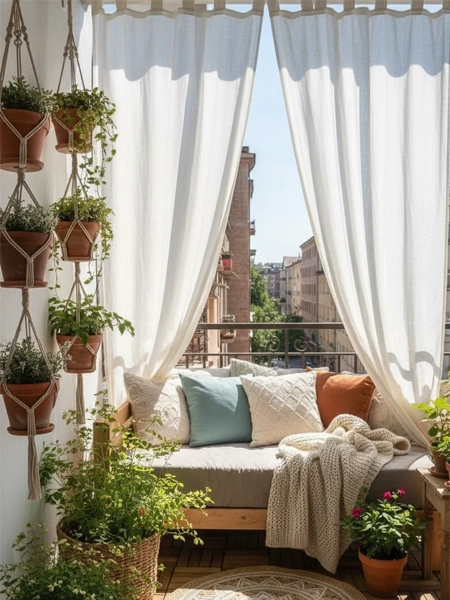
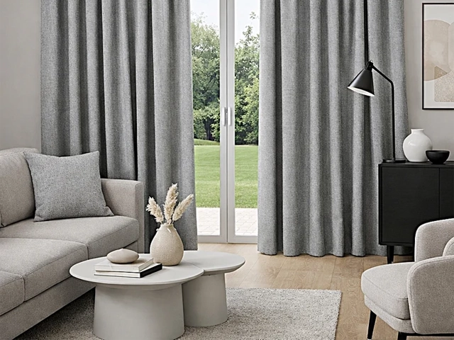

Balcony & sliding door curtains in Bangladesh
Balcony & sliding door curtains in Bangladesh | Curtain Canvas
Balcony doors and sliding glass doors are among the most useful parts of an apartment and among the hardest to dress. They are wide and tall, they take the full force of the sun, and they are used constantly, so the curtain has to move easily and still look good when it is closed, open or halfway between. In a Dhaka apartment, the balcony door is often also the largest window in the living room or master bedroom.
At Curtain Canvas, we design and make balcony and sliding door curtains in Bangladesh around your actual doors: their width, height, track position, the direction of the sun and the way your household uses the balcony. From consultation and precise measurement to custom tailoring and professional installation, one team looks after every step.
Book a Free ConsultationWhat balcony and sliding door curtains need to do
Good balcony and sliding door curtains balance light, privacy, and ease of use rather than favoring only one. Large glass doors place different demands on curtains than ordinary windows:
- Handle strong light. A wide glass door lets in a lot of sun, glare, and heat, especially on west- and south-facing balconies.
- Protect privacy. Glass doors facing a neighboring building or a shared corridor need a screen that still allows daylight.
- Move smoothly. The curtain is opened and closed every time someone steps outside, so the track and fabric have to glide without catching.
- Clear the door. The curtain should be stacked fully on one or both sides so the door can open without any obstruction.
- Look good as a wall of fabric. A wide curtain is a major visual element, so fabric, fullness, and fall matter even more.
- Cope with the climate. Humidity, monsoon rain, dust, and sun all reach a balcony door, so fabric and hardware need to be chosen with care.
Balcony & sliding door curtain styles we offer
Our balcony and sliding door curtain styles bring together smooth-gliding functionality and weather-ready fabrics, giving you light control, privacy, and a polished look for every opening.

Light-Filtering Curtains
Best for glass doors that face strong sun. They reduce glare and make the room more comfortable while keeping it bright.
Blackout-Lined Curtains
Best for bedroom balcony doors. A blackout lining gives you full darkness and privacy when you need it.
Custom-Designed Curtains
For corner balconies, double-height glass, bay doors, and curved windows or doors that sit beside a window, we plan the curtain from scratch. See our customized curtain solutions.Explore curtain styles
Choosing fabric for balcony doors in Bangladesh
Bangladesh's strong sun, humidity, and monsoon season should guide your choice. Use this as a starting point:
| Your priority | What to look for |
|---|---|
| Soft daylight with privacy | Quality sheer or semi-sheer fabric with an even weave |
| Glare and heat on sun-facing doors | A lined or tighter-weave curtain as a second layer |
| A darker room for sleep | Blackout-lined curtain with generous side overlap |
| Smooth daily movement | Lightweight to medium-weight fabric on a quality track |
| Cleaner, easier upkeep | Fabrics that handle regular care and keep their shape |
| Comfort in humid or rainy months | Fabrics that hold their drape without feeling heavy, with the curtain kept clear of wet thresholds |
Matching curtains to your balcony or sliding door
Look at how the door opens and where people walk through. That tells us which way the curtain should stack and how much space the track needs.
Living room with balcony door:
Layered curtains in a neutral tone, with a sheer layer that frames the view and a heavier layer for evenings.
Master bedroom with balcony access:
Sheer plus blackout layers for privacy and sleep.
Dining area beside a sliding door:
Light-filtering fabric that softens the light over the table and clears easily when the door is used.
Sun-facing glass door:
A tighter-weave or lined curtain behind a sheer one to cut glare and heat.
Door beside a window:
A coordinated curtain across both, so the wall looks like one clean line of fabric.
Getting the specifics correct
Large doors need careful planning. We plan each of these with you:
- Track or rod choice: A track usually gives the smoothest movement on wide doors, and a rod can suit lighter curtains on narrower ones. We match the hardware to the fabric weight and the door width.
- Mounting position: Mounting the track above the door frame or ceiling-fixed helps the curtain hang cleanly and makes the ceiling feel taller.
- Stack space: We leave enough room at the side for the curtain to open fully so it does not block the door or the view.
- Length: Floor-skimming curtains look tailored, and we keep the hem clear of the door track and any wet threshold.
- Width and fullness: Enough fabric for an even fold across a wide opening, without gaps or a stretched look.
- Handle and lock clearance: We plan the curtain so it clears door handles, locks, and sliding mechanisms.
- Layer control: Separate tracks for sheer and heavy layers, so you can adjust each one independently.
- Motorized options: For very wide or tall doors, we can advise on motorized systems for effortless opening and closing.
How we process your balcony and sliding door curtains
At Curtain Canvas, each balcony and sliding door curtain is made to your exact opening size, from fabric selection and precise tailoring to smooth-gliding track fitting and professional installation.
Consultation:
Share your doors, your room, and your needs. See our curtain consultancy service.
Onsite visit and fabric presentation:
We bring catalogues and swatches and can arrange a trial hanging so you can see the fabric against your door and in the room's own light.
Precise measurement:
The door, frame, ceiling height, and stacking space are all measured for the right dimensions.
Custom tailoring:
Your curtains are stitched and finished to the approved design.
Professional installation:
We fit the track or rod and check alignment, movement, and curtain fall beforehand.
After-sales support:
Help with fitting and adjustments after installation.
Why choose us for balcony and sliding door curtains
Curtain Canvas delivers custom-fitted balcony and sliding door curtains with durable fabrics, smooth-gliding tracks, and professional installation, so every opening stays private, shaded, and beautifully finished.
Make an Appointment- Interior design-focused approach: We choose curtains that suit your furniture, colors, and room proportions.
- Wide choice: 120+ fabric and style options.
- Made to measure: Every curtain is planned for your door, not adapted from a standard size.
- One team, start to finish: consultation, measurement, tailoring, installation, and support.
- Experience you can check: 5+ years of curtain expertise, 2,000+ windows styled, and a 4.9/5 client satisfaction rating. See our client reviews and completed projects.
Balcony and Sliding Door Curtains Across Bangladesh
We serve homes and apartments across Dhaka and other major cities. Explore our Dhaka service area and the wider Bangladesh service area.
FAQs about balcony and sliding door curtains
For most balcony doors, layered curtains work best: a sheer layer for soft daylight and view and a heavier or lined layer for privacy, glare control, and evening comfort. If the door is in a bedroom, add a blackout layer.
For wide sliding doors, a track usually gives the smoothest movement and lets the curtain stack neatly. A rod can suit narrower doors and lighter curtains. We recommend the right option once we see your door and measure the space.
Light leakage is controlled by fullness, side overlap, and mounting position. We plan these during measurement, and for blackout curtains we pay particular attention to the edges and the space above the track.
Yes. We plan the curtain so it stacks fully clear of the door, uses a smooth-running track and stays away from handles, locks, and wet thresholds, which makes everyday opening and closing easy.
Neutral shades such as ivory, sand, soft grey, and taupe suit most rooms and work with the daylight coming through the glass. Deeper tones can work in a formal room. We help you match the curtain to your walls and furniture.
Yes. All our balcony and sliding door curtains are made to measure, based on your actual door, frame, and ceiling dimensions, fabric choice, and design.
We can advise on motorised options for wide or tall doors. Please contact us with your door size and we will confirm what is available for your space.
Yes. Our team measures, installs the track or rod, and checks the finish before handover.